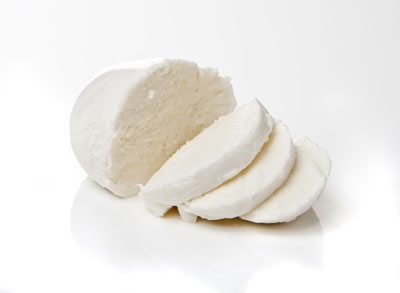
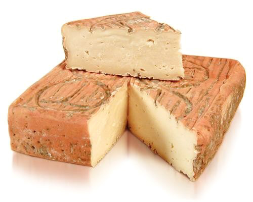
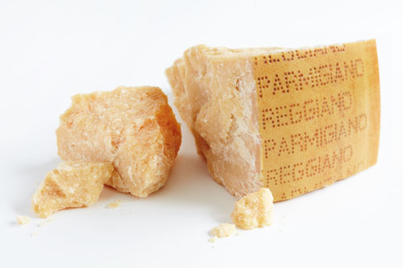

 La mozzarella è un latticino a base di formaggio fresco a pasta filata italiano, originario dell'Italia centro-meridionale.
Tradizionalmente viene preparato con latte bufalino. In seguito poi, è stato usato anche quello di mucca per la variante vaccina chiamata originariamente fior di latte, definizione tuttora usata in alternativa a mozzarella di latte vaccino, che specifica la qualità vaccina per obbligo di legge.
Questo latticino si può ricavare da latte misto ossia miscelato: in questo caso, i produttori sono tenuti a specificare le varie percentuali di latte bufalino e vaccino contenute adeguandosi alla legge che impone di apporre sull'etichetta il solo nome generico mozzarella, seguìto dalla lista degl'ingredienti.[5] Altre qualità sono quelle di solo latte pecorino e solo latte caprino: la variante pecorina è tradizionalmente preparata in certe zone mentre quella caprina è recente.[6][7] La mozzarella deve il suo nome all'operazione di mozzatura compiuta per separare dall'impasto i singoli pezzi durante la lavorazione artigianale, come mostra anche la sua antica denominazione: mozza
 Il Taleggio prende il nome dall’omonima valle, situata nell’alto bergamasco. La produzione di questo formaggio nasce dall'esigenza degli abitanti della zona di conservare il latte eccedente il consumo diretto. Inizialmente il formaggio così prodotto veniva chiamato “stracchino”, nome che per secoli in Lombardia ha contraddistinto, più che un determinato formaggio, in generale tutti i formaggi molli a forma quadrata. Il termine deriva dall’espressione dialettale "strach", che significa stanco, e allude probabilmente alle condizioni delle mucche che giungevano in pianura dopo un lungo periodo estivo di permanenza in alpeggio.
Ogni forma di Taleggio pesa da 1,7 a 2,2 kg ed è un parallelepipedo quadrangolare, con lati di 18–20 cm e scalzo diritto alto 4–7 cm. La crosta è sottile, di consistenza morbida e di colore rosato naturale, con presenza di muffe caratteristiche color grigio e verde – salvia chiaro. La pasta è uniforme e compatta, più morbida sotto la crosta e a fine stagionatura, più friabile al centro della forma. Il colore della pasta varia da bianco a paglierino, con qualche piccolissima occhiatura. Il sapore è dolce, con lievissima vena acidula, leggermente aromatico, alle volte con retrogusto tartufato; l’odore è caratteristico.
 Il Parmigiano-Reggiano è un formaggio DOP, a pasta dura, prodotto con latte crudo, parzialmente scremato per affioramento, senza l'aggiunta di additivi o conservanti. La zona di produzione del Parmigiano-Reggiano comprende le province di Parma, Reggio Emilia, Modena, Bologna a sinistra del fiume Reno e Mantova a sud del fiume Po.
Attualmente gran parte della produzione del Parmigiano-Reggiano avviene con latte prodotto da vacche Frisone, introdotte nel territorio nel corso del Novecento, ma la razza tradizionalmente sfruttata per la produzione del formaggio è la Reggiana rossa, a triplice attitudine (latte, lavoro e carne), introdotta probabilmente dai Longobardi.
La sua produzione di latte è poco più della metà rispetto alla Frisona, sebbene di qualità superiore, e questo ne spiega l'abbandono, unito anche al fatto che la sua forza e l'attitudine al lavoro sono divenute inutili con l'avvento dei trattori.
Alcuni piccoli caseifici ne usano ancora il latte per produrre un formaggio di qualità superiore, da cui l'Associazione Nazionale Allevatori Bovine di Razza Reggiana